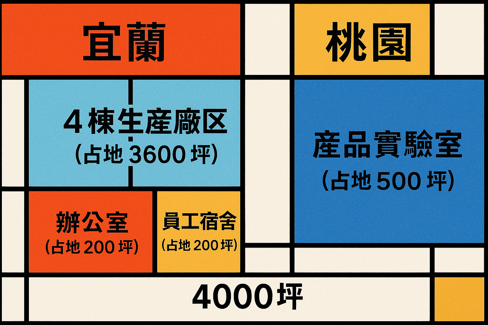

我們擁有總占地4500坪的現代化生產基地，包括位於宜蘭的4棟生產廠區 (共3600坪)、1個辦公室 (200坪)及1個員工宿舍 (200坪)，以及位於桃園的1棟產品實驗室 (500坪)。
引進高端研發設備，包括電子束光刻機等先進設備，提升研發能力與技術水準，開展前沿技術研究，加速產品創新與升級。
我們擁有50人的品質體系部， QE團隊擁有10年經驗，致力於MIL-STD-810G認證，確保產品品質與可靠性。嚴格按照產業高標準要求，開展產品測試與驗證。建立完善的品質管制體系，從原材料採購到成品出廠全程把控品質。計劃於2026-Q3完成ISO認證。